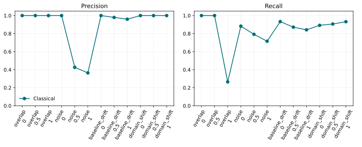

Scientific benchmarks#
DeepPeak includes a deterministic benchmark covering increasing pulse overlap, noise, baseline drift, and pulse-shape domain shift. Each trace retains exact peak locations and amplitudes. Evaluation uses one-to-one Hungarian matching within a five-sample tolerance and reports precision, recall, mean absolute timing error, count error, amplitude error, and traces per second.
Important
The checked-in results below are measured, not illustrative. The default
run measures the dependency-light classical baseline. DenseNet, WaveNet,
and U-Net are included only when their trained .keras models are passed
to the runner; absent models are never assigned fabricated scores.
{kind=link}

Reproduce the benchmark#
From the repository root, run:
python tools/run_benchmarks.py
To compare trained neural models on exactly the same traces:
python tools/run_benchmarks.py \
--model DenseNet=artifacts/densenet.keras \
--model WaveNet=artifacts/wavenet.keras \
--model U-Net=artifacts/unet.keras
The command regenerates results.csv and benchmark-summary.svg. The
seed, scenario severities, trace count, matching tolerance, and detector
defaults are fixed in the source. The CSV is intentionally small and is the
canonical machine-readable benchmark table.
Calibration and uncertainty#
expected_calibration_error measures binary confidence calibration, while
bootstrap_interval supplies deterministic percentile confidence intervals.
Neural studies should report calibration error and 95% bootstrap intervals
alongside point estimates. Models that do not emit probabilities should leave
calibration fields missing rather than reinterpret amplitudes as confidence.
method,scenario,level,precision,recall,timing_error,count_error,amplitude_error,throughput,calibration_error,uncertainty_coverage
Classical,overlap,0.0,1.0,1.0,0.5137614678899083,0.0,0.0214589054625865,10294.539638324142,nan,nan
Classical,overlap,0.5,1.0,1.0,0.40384615384615385,0.0,0.021556911723571156,18892.68383660215,nan,nan
Classical,overlap,1.0,1.0,0.2647058823529412,1.0740740740740742,3.125,0.17099190825547184,18595.050960938777,nan,nan
Classical,noise,0.0,1.0,0.8828828828828829,0.6428571428571429,0.5416666666666666,0.07055582065324185,18962.962907146633,nan,nan
Classical,noise,0.5,0.4263959390862944,0.7924528301886793,1.2619047619047619,3.7916666666666665,0.2219193102722156,18254.421000394337,nan,nan
Classical,noise,1.0,0.3644859813084112,0.7155963302752294,1.5,4.375,0.3494803595339359,18517.318797211225,nan,nan
Classical,baseline_drift,0.0,1.0,0.9333333333333333,0.5714285714285714,0.2916666666666667,0.04064991233781372,19330.800057328972,nan,nan
Classical,baseline_drift,0.5,0.979381443298969,0.8715596330275229,0.6842105263157895,0.5833333333333334,0.20647856419445693,18938.64600033347,nan,nan
Classical,baseline_drift,1.0,0.96,0.8421052631578947,0.7604166666666666,0.75,0.4099416300581599,18548.330208677053,nan,nan
Classical,domain_shift,0.0,1.0,0.8918918918918919,0.6262626262626263,0.5,0.06364602682737865,19386.10666897115,nan,nan
Classical,domain_shift,0.5,1.0,0.9065420560747663,0.12371134020618557,0.4166666666666667,0.10991529440813293,17864.892533222228,nan,nan
Classical,domain_shift,1.0,1.0,0.9320388349514563,0.11458333333333333,0.2916666666666667,0.17743496583008786,17353.579235210254,nan,nan